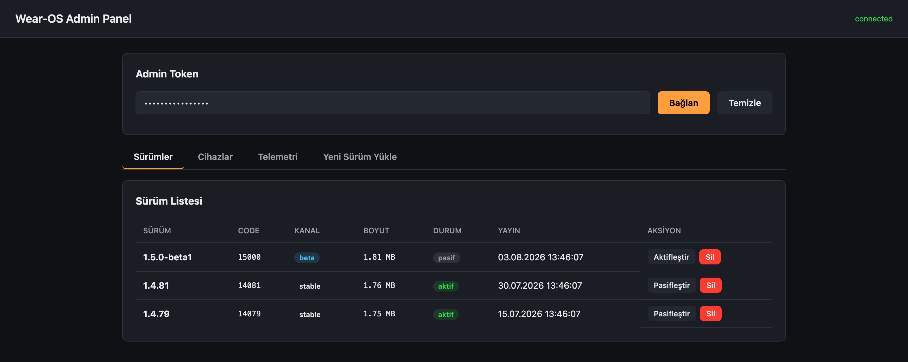
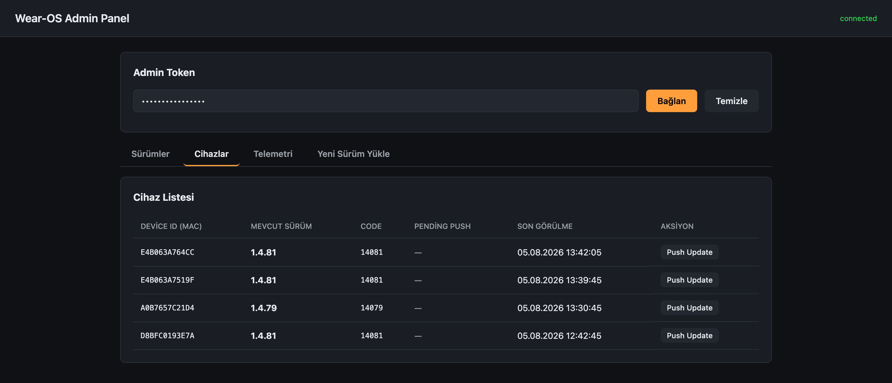

Sunucu Kurulumu
Saatlerin gönderdiği telemetri raporlarını toplayan, konumu çözen ve dış sistemlere yayan sunucu programının sıfırdan kurulumu. Aynı program yazılım güncellemelerini (OTA) de dağıtır.
Raporun nasıl üretildiği, BSSID taraması ve veri dürüstlüğü kuralı için Telemetri ve Konumlandırma sayfasına bakın.
Bu sayfa daha önce hiç sunucu kurmamış biri için yazıldı. Sırayla takip ederseniz sunucu kendi bilgisayarınızda çalışır hale gelir ve yönetim panelini tarayıcıda açabilirsiniz. İlk seferinde 30-40 dakika sürer; bunun büyük kısmı iki programın (Node.js ve PostgreSQL) bir kereye mahsus kurulumudur. İkinci seferde tek komutla başlar.
Sunucu ne iş yapar?
Saatler internet üzerinden bu programa düzenli rapor gönderir: pil durumu, sinyal, çevredeki WiFi ağları, çalışan yazılım sürümü. Program bu raporları bir veritabanına yazar, WiFi ağlarından cihazın konumunu çözer ve hepsini bir yönetim panelinde gösterir. Yeni bir yazılım sürümü çıkardığınızda saatlere de bu program üzerinden dağıtırsınız.
Bu yüzden iki parça gerekir: programın kendisini çalıştıran Node.js ve raporların saklandığı PostgreSQL veritabanı. İkisi de ücretsizdir ve bilgisayarınıza kurulur.
Neye ihtiyacınız var
Node.js (LTS sürümü)
Sunucu programını çalıştırır. nodejs.org'dan indirilir; 2. adımda kuracaksınız.
PostgreSQL
Raporların saklandığı yer. Kendi wear_os şemasında çalışır, başka verilere dokunmaz. 3. adımda kuracaksınız.
RabbitMQ
Raporları dış sistemlere iletmek için. Kurulu değilken program yine çalışır, yalnız iletim kapalı kalır.
Kurulum
1. Terminali açın
Kurulum yazıyla komut girilen bir pencereden yapılır; buna terminal denir.
- macOS: Spotlight'ı açın (⌘ + boşluk),
Terminalyazıp Enter - Windows: Başlat menüsüne
PowerShellyazıp Enter - Linux: Ctrl + Alt + T
Komutları tek tek yazıp her birinin sonunda Enter'a basacaksınız. Bir komut çalışırken bekleyin; iş bitince satır başına geri döner.
2. Node.js'i kurun
nodejs.org adresine gidin ve LTS yazan sürümü indirin. Kurulum sihirbazında hiçbir ayarı değiştirmeden ilerleyin. Windows'ta kurulum bitince terminali kapatıp yeniden açın; yoksa yeni programı tanımaz.
Kurulduğunu doğrulayın:
node --version
npm --version
İlki v20 ya da daha yüksek bir sürüm numarası, ikincisi de bir numara
vermelidir. npm, Node.js ile birlikte gelir; programın ihtiyaç duyduğu
paketleri indirmek için kullanacaksınız.
3. PostgreSQL'i kurun
PostgreSQL, raporların yazılacağı veritabanıdır. Kurulum işletim sistemine göre değişir; yalnız kendi sisteminizin bölümünü uygulayın. Üçünde de sonunda elinizde bir kullanıcı adı ve şifre olacak. Bunları not edin, 6. adımda yazacaksınız.
Windows
postgresql.org/download/windows sayfasındaki kurulum dosyasını indirip çalıştırın. Sihirbaz sırasında:
postgreskullanıcısı için bir şifre ister. Belirleyin ve not edin.- Port sorusunu
5432olarak bırakın. - Sonunda "Stack Builder" penceresi açılırsa kapatın; gerekmez.
Not edin: kullanıcı adı postgres, şifre az önce belirlediğiniz.
macOS
postgresapp.com adresinden Postgres.app'i indirin, Uygulamalar klasörüne sürükleyin ve açın. Pencerede Initialize düğmesine basın; birkaç saniye sonra yeşil "Running" yazısı görünür. Uygulama açık olduğu sürece veritabanı çalışır; bilgisayarı yeniden başlattığınızda uygulamayı tekrar açmanız gerekir.
Not edin: kullanıcı adı Mac oturum adınızdır (terminalde whoami yazınca
çıkan ad), şifre yoktur.
Linux (Ubuntu / Debian)
sudo apt update
sudo apt install postgresql
Kurulum bittiğinde veritabanı kendiliğinden çalışır. postgres kullanıcısına
bir şifre vermeniz gerekir:
sudo -u postgres psql -c "ALTER USER postgres PASSWORD 'buraya-bir-sifre';"Not edin: kullanıcı adı postgres, şifre az önce yazdığınız.
4. Veritabanını oluşturun
PostgreSQL kuruldu ama içinde henüz bizim veritabanımız yok. Program tabloları kendisi
oluşturur, fakat corezzle adlı veritabanının önceden var olmasını bekler.
Bunun için PostgreSQL'in komut satırını (psql) açın:
- Windows: Başlat menüsünden SQL Shell (psql) uygulamasını açın. Server, Database, Port ve Username sorularında hiçbir şey yazmadan Enter'a basın; şifre sorusuna 3. adımdaki şifreyi yazın (yazarken ekranda görünmez, normaldir).
- macOS: Postgres.app penceresinde adınızı taşıyan veritabanı simgesine çift tıklayın; Terminal'de psql açılır.
- Linux: terminale
sudo -u postgres psqlyazın.
Açılan satır =# ile biter. Şu komutu yazın (sondaki noktalı virgül dahil):
CREATE DATABASE corezzle;
Karşılık olarak CREATE DATABASE yazısını görürseniz olmuştur. \q
yazıp Enter ile çıkın.
5. Sunucu dosyalarını indirin
git clone DEPO-ADRESİ
cd corezzle-wearos-backendİlk satır dosyaları bilgisayarınıza kopyalar, ikincisi o klasöre girer. Bundan sonraki bütün komutları bu klasörün içindeyken çalıştıracaksınız.
git: command not found hatası alırsanız git kurulu değildir. Kurmak
istemiyorsanız depo sayfasındaki Code → Download ZIP bağlantısından
indirip klasörü açabilir, sonra terminalde cd ile o klasöre girebilirsiniz.
6. Ayar dosyasını oluşturun
Program ayarlarını klasördeki .env adlı dosyadan okur: veritabanına hangi
kullanıcı ve şifreyle bağlanacağı, yönetim panelinin şifresi gibi. Bu dosya henüz yok;
örnek dosyayı kopyalayarak oluşturun:
# macOS / Linux
cp .env.sample .env
# Windows
copy .env.sample .envŞimdi dosyayı bir metin düzenleyiciyle açın. Adı noktayla başladığı için dosya yöneticileri onu genelde gizler; terminalden açmak daha kolaydır:
# Windows
notepad .env
# macOS
open -e .env
# Linux
nano .envİçinde yalnız üç satırı değiştireceksiniz:
| Satır | Ne yazacaksınız |
|---|---|
DB_USER= | 3. adımda not ettiğiniz kullanıcı adı (Windows ve Linux'ta postgres, macOS'ta Mac oturum adınız) |
DB_PASSWORD= | 3. adımda not ettiğiniz şifre. macOS'ta Postgres.app şifre kullanmaz; eşittir işaretinden sonrasını boş bırakın |
ADMIN_TOKEN= | Yönetim panelinin şifresi. Aşağıdaki komutla üretip yapıştırın |
Diğer satırlara dokunmayın; varsayılanlar kendi bilgisayarınızdaki kurulum için doğrudur.
ADMIN_TOKEN için tahmin edilemez, uzun bir değer gerekir. Kendiniz uydurmayın;
terminalde şunu çalıştırın ve çıkan 64 karakterlik yazıyı kopyalayın:
node -e "console.log(require('crypto').randomBytes(32).toString('hex'))"Dosyayı kaydedin. Bitmiş bir .env dosyasının üst kısmı şuna benzer (alttaki araç takip köprüsü satırları, VTS_*, olduğu gibi kalır):
PORT=3001
DB_HOST=localhost
DB_PORT=5432
DB_NAME=corezzle
DB_USER=postgres
DB_PASSWORD=3-adimda-belirlediginiz-sifre
DB_SCHEMA=wear_os
ADMIN_TOKEN=9f2c...(64 karakter)...a71e
Notepad "Farklı kaydet" ile kaydederken adın sonuna .txt ekleyebilir; dosya
.env.txt olur ve program onu görmez. Kaydettikten sonra terminalde
dir yazıp dosyanın adının tam olarak .env olduğunu kontrol edin.
7. Programın paketlerini indirin
npm install
Sunucu programı hazır kütüphaneler kullanır; bu komut onları internetten indirip klasöre
node_modules adıyla koyar. Bir iki dakika sürer. Sonunda "added ... packages"
gibi bir özet görürsünüz. Arada sarı warn satırları çıkması normaldir; kırmızı
ERR! çıkmadıysa sorun yok.
8. Veritabanı tablolarını oluşturun
npm run migration:up
Bu komut 4. adımda açtığınız corezzle veritabanına bağlanır, içinde
wear_os adlı bir bölme (şema) açar ve programın ihtiyaç duyduğu tabloları
oluşturur. İlk satırda schema "wear_os" ensured, ardından birkaç migration
satırı görmelisiniz. Hata almadan bittiyse tablolar hazır.
Burada hata alırsanız sebep neredeyse her zaman 3, 4 ya da 6. adımdadır; aşağıdaki "en sık takılınan yerler" tablosuna bakın.
9. Sunucuyu başlatın
npm startŞu satırı görünce sunucu çalışıyor demektir:
corezzle-wearos-backend running on port 3001
Bu terminal penceresini açık bırakın; kapatırsanız sunucu da durur. Durdurmak için
Ctrl + C. İkinci seferden itibaren yalnız klasöre girip npm start demeniz
yeter (PostgreSQL'in çalışıyor olması şartıyla).
10. Çalıştığını görün
Tarayıcıda http://localhost:3001/admin/
adresini açın; yönetim paneli gelir. Üstteki alana .env dosyasına yazdığınız
ADMIN_TOKEN değerini yapıştırıp Bağlan deyin. Listelerin boş olması
normaldir; henüz hiçbir saat rapor göndermedi.
Sahte bir rapor gönderip boru hattının uçtan uca çalıştığını görmek için sayfanın sonundaki Kurulumu doğrulama bölümündeki komutları kullanın.
İlk denemede en sık takılınan yerler
| Gördüğünüz | Sebebi ve çözümü |
|---|---|
node: command not found | Node.js kurulmadı ya da kurulumdan sonra terminal yeniden açılmadı (2. adım) |
database "corezzle" does not exist | 4. adım atlandı; veritabanını oluşturun |
password authentication failed for user "postgres" | .env içindeki DB_PASSWORD, PostgreSQL kurulumunda belirlediğinizle aynı değil (6. adım) |
role "postgres" does not exist | macOS'ta Postgres.app kullanıyorsunuz; DB_USER Mac oturum adınız olmalı |
connect ECONNREFUSED 127.0.0.1:5432 | PostgreSQL çalışmıyor. macOS'ta Postgres.app'i açın; Windows'ta Hizmetler'den postgresql servisini başlatın |
EADDRINUSE ... :3001 | 3001 portunu başka bir program kullanıyor; büyük ihtimalle önceki bir sunucu kopyası. Diğer terminali Ctrl + C ile kapatın ya da .env'de PORT değiştirin |
| Panel açılıyor ama "Bağlan" yetkisiz diyor | Yapıştırdığınız token .env'dekiyle aynı değil. Kopyalarken başında ya da sonunda boşluk kalmış olabilir |
.env'i değiştirdim, etkisi olmadı | Dosya yalnız başlangıçta okunur. Sunucuyu Ctrl + C ile durdurup npm start ile yeniden başlatın |
Servis yalnızca DB_SCHEMA ile verilen şemada çalışır (varsayılan
wear_os) ve tabloları oraya oluşturur. Veritabanını başka sistemlerle
paylaşıyorsanız bu şemanın size ait olduğundan emin olun; diğer şemalara dokunulmaz.
Docker kullananlar için: docker compose up yalnız sunucu programını kaldırır,
PostgreSQL'i içermez. Veritabanı ayrıca çalışıyor olmalıdır ve konteyner içinden
localhost sizin bilgisayarınız değildir; Mac ve Windows'ta
DB_HOST=host.docker.internal kullanın.
Ortam değişkenleri
6. adımda yalnız üç değişkeni değiştirdiniz. Programın tanıdığı değişkenlerin tamamı aşağıdadır; hepsinin varsayılanı kendi bilgisayarınızdaki kurulum için uygundur.
| Değişken | Varsayılan | Açıklama |
|---|---|---|
PORT | 3001 | HTTP portu |
NODE_ENV | development | production dışında SQL debug logu açıktır |
ADMIN_TOKEN | (yok) | Admin uçlarının Bearer anahtarı. Uzun ve rastgele olmalı. |
DB_HOST / DB_PORT | localhost / 5432 | PostgreSQL adresi |
DB_NAME / DB_USER / DB_PASSWORD | corezzle / postgres / postgres | Bağlantı bilgileri |
DB_SCHEMA | wear_os | Servisin kullandığı şema |
| Değişken | Varsayılan | Açıklama |
|---|---|---|
GEOLOCATE_URL | api.beacondb.net/v1/geolocate | Ichnaea uyumlu uç |
GEOLOCATE_KEY | boş | Doluysa ?key= olarak eklenir |
GEOLOCATE_TIMEOUT_MS | 4000 | Zaman aşımı |
GEOLOCATE_CACHE_TTL_MS | 600000 | Önbellek ömrü (10 dakika) |
İstek/yanıt formatı Ichnaea standardıdır, Google Geolocation API ile birebir aynıdır. Sağlayıcı değiştirmek yalnızca bu iki değişkeni değiştirmektir:
GEOLOCATE_URL=https://www.googleapis.com/geolocation/v1/geolocate
GEOLOCATE_KEY=<api-key>| Sağlayıcı | Sonuç |
|---|---|
| beaconDB (açık, anahtarsız) | Boru hattı çalışır; bölgesel kapsama zayıfsa IP fallback döner |
| Google Geolocation API | Gerçek çözüm: ±19 m (doğrulandı) |
Google tarafında ayda 10.000 istek ücretsiz, sonrası 1.000 istekte 5 USD. Konum önbelleği bu maliyeti cihaz başına ayda birkaç yüz çağrıya indirir; detay için maliyet koruması.
| Değişken | Açıklama |
|---|---|
OTA_SERVE_DIR | Admin panelinden yüklenen binary'lerin yazıldığı klasör |
BINARY_BASE_URL | binary_url bu tabandan üretilir: {BINARY_BASE_URL}/firmware-{version}.bin |
| Değişken | Varsayılan | Açıklama |
|---|---|---|
VTS_ENABLED | false | true olana kadar iletim dry-run çalışır |
VTS_TRANSPORT | http | rabbitmq gerçek transport; http/tcp eski protobuf yolu |
RABBITMQ_URI | amqp://127.0.0.1 | Broker adresi |
Mesaj kuyrukları
Backend raporu amq.direct exchange üzerinden durable kuyruklara publish eder.
İki kuyruk vardır ve koşulları farklıdır:
| Kuyruk | Ne zaman |
|---|---|
live-data-queue | Her raporda (cihaz sağlığı verisi) |
location-data-queue | Yalnızca gerçek konum çözümü varsa (fallback'siz) |
IP tabanlı kaba tahmin konum kuyruğuna asla basılmaz. Nedenini ve etkileşimli örneğini veri dürüstlüğü kuralı bölümünde görebilirsiniz.
Yayınlanan mesaj formatı
{
"deviceType": "TRACKER", // genel izleme cihazı tipi
"imei": "E4B063A764CC",
"dateTime": "2026-07-21T01:46:48Z",
"latitude": 41.0289898, // yalnızca gerçek çözüm; yoksa 0
"longitude": 29.2229154,
"locationAccuracy": 18.9,
"gsmSignalQuality": 20,
"wifi": [ {"mac": "...", "dbms": -53}, ... ],
"softwareVersion": "1.4.81",
"battery": null
}Araç-özel alanlar (CAN, lastik basıncı, kontak, yakıt) bilinçli olarak yoktur. Bu format giyilebilir cihaz, hayvan, yaşlı ve eşya takibi gibi tüm GPS'siz senaryolar için ortaktır.
Admin paneli
Servis ayaktayken panel /admin/ adresinde açılır. Üstteki alana
ADMIN_TOKEN değerini girip Bağlan deyin; token tarayıcıda saklanır.


API uçları
| Uç | Erişim | Açıklama |
|---|---|---|
/api/wear-os/manifest | Açık | Cihaz sürüm sorgusu |
/api/wear-os/events | Açık | Güncelleme olayları |
/api/wear-os/telemetry | POST açık · GET admin | Rapor gönderimi ve listeleme |
/api/wear-os/releases | Admin | Sürüm yönetimi |
/api/wear-os/devices | Admin | Cihaz yönetimi |
/admin/ | Statik | Panel arayüzü (uçlar token ister) |
Kurulumu doğrulama
Servis ayağa kalktıktan sonra telemetri akışını uçtan uca sınayın:
# 1) Panel açılıyor mu
curl -s -o /dev/null -w "%{http_code}\n" http://localhost:3001/admin/
# 2) Admin yetkisi çalışıyor mu (boş liste de olsa 200 dönmeli)
curl -s -H "Authorization: Bearer $ADMIN_TOKEN" \
http://localhost:3001/api/wear-os/telemetry
# 3) Sahte bir rapor gönderin; cihaz beklemeden boru hattını test eder
curl -s -X POST http://localhost:3001/api/wear-os/telemetry \
-H "Content-Type: application/json" \
-d '{"device_id":"E4B063A764CC","wifi_rssi":-53,
"wifi":[{"mac":"A4:B1:C2:D3:E4:F5","rssi":-53}],
"uptime_s":887,"firmware_version":"1.4.81","heap_free":970288}'Üçüncü adımdan sonra panelin Telemetri sekmesinde yeni satır görünmelidir. Konum sütunu boşsa sağlayıcı erişim noktalarını tanımamıştır; gri bir koordinat görüyorsanız IP fallback dönmüştür.